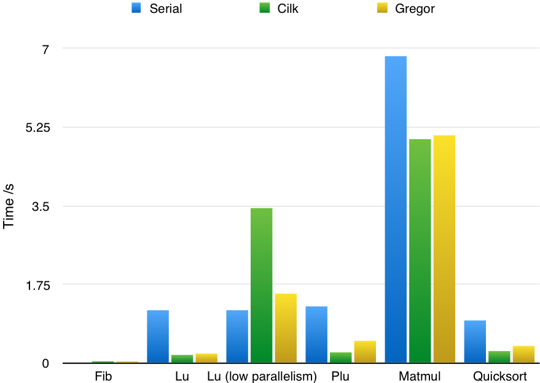

Final Report
Summary
Gregor is a worker-pool based multithreaded programming framework in C. It provides simple-to-use semantics of spawn and sync in Cilk, where the programmer simply identifies the independent parallel tasks and library would take care of the scheduling and work stealing.
Plan at Parallelism Competition
At the parallelism competition, we are planned to show the functionality and scalability of our framework. First, we may use small animations to explain how to create and steal works and also run example code to show how to use the library. Moreover, we will show our implmentation on different machines with different number of cores. Last but not least, we will compare our implementation with cilk.
Background
Cilk proposed an interesting parallel programming model which hide the thread execution policies from the programmers so that the programmer simply identified the parallelism and runtime will take care of implementation mappings[1]. Its most prominent feature, work stealing scheduler[2], was proved to enjoy some nice spatial and time properties. While it extended the syntax of C, we tend to add these features as a C library. As a result, however, the programmers have to follow certain disciplines. We try to provide those syntactic and semantics sugars, like work stealing sheduling and performance guarantees in our library and make things as easy as possible.
Challenge
Continuation[3]: In order to distribute the jobs among workers, we have to abstract them in a managable way and be able to handle them under stack disciplines.
Thread Tree[4]: As in Cilk, each threaded procedure is implicitly synced just before return, which means we need to maintain a global thread “tree” data structure that potentially can be accessed by all the workers simultaneously, where each node represents a thread and each edge corresponds either a spawn site or a sync site. The manipulation of the tree must be scalable to achieve good performance.
Thread Scheduling and Work Stealing: With multiple continuations in hands, which threads should be picked to work on them and how should stealing be implemented in a way that can scale across many cores. Perhaps with the extra information about the characteristic of the job, we hope to come up with a more reasonable/workload aware sheduling.
Approach
Basic Design
(This part will be elaborated in final report)
Our current design mimic a small non-preemptive OS kernel in user level library where on each spawn, the library will take care of all the arguments passing, return point setting and return value to create a new job instance and ensure the library can put its hand on critical point; on each sync point, the library will deschedule the job and look for the new job either from its private deque or steal from others.
Speed-up Tricks
Our implementation also uses a couple of neat tricks to really improve performance:
- Memory Management (buffer).
- Work Stealing with giant lock.
- TH protocol & reduce context saving overhead.
- Cache Alignment.
- O3 optimization.
We will briefly present some motivations behind each optimization and illustrate their effects on an example program fib in next section
Code example
1 | int fib(int n) { |
The fib will recursively spawn two children and then sync for their return. There is little computation and memory access work for each job other than spawn and sync, thus the program is simple enough to provide a good insight into the overhead of our Gregor runtime and demonstrate the effects of optimizations we have made.
Its execution time relative to development time curve is shown below based on settings specified in next section. Each turning point represents an optimization trick we use during our development and those optimizations are not specialized to this benchmark, but as shown in next section, quite general.
-
The initial implementation would mmap a stack page for each job and unmmap it when the job finishes. We find that the mmap syscall incurred non-trivial overhead due to both kernel trap and page searching. Thus we add a memory manager layer to buffering all the freed pages on each worker. This reduces the run time of fib(29) from 23.199s to 3.576s(). Note that even fib(30)(which would double the run time of fib(29)) would cause mmap to fail then.
-
We next replace single global job queue with private job deques for each worker and implement the work stealing algorithm describe in Cilk paper. Access to the private job deque need acquire a deque lock. This reduce the run time of fib(30) to 0.359s.
-
We get rid of the giant lock on each deque and implement a variant TH protocol decribed in Cilk paper with atomic operations. We notice that the state-of-art Cilk implementations(MIT version and GCC version) do not fully implement this feature, and they still use giant lock for each deque pulling. Besides, we notice that the calling convention of GCC on IA32 can save us a lot work of context saving. Our current version only saves a very small number of registers and thus reduces the memory access frequency. These two optimizations reduce the run time to 0.252s.
-
We notice that one data structure governing the state of a worker is allocated contiguously in memory and the worker only accesses their own copy. This indicates that the cache line might overlap for two copies. We annotate that data structure to align with 128-byte boundary and this reduces the time to 0.071s
-
Finally, we enable O3 optimization and let gcc deal with the rest. This reduce time to 0.052.
Results
Settings
We tested our implementation on latedays machine with two, six-core Xeon e5-2620 v3 processors. Here are the parameters of the processors: 2.4 GHz, 15MB L3 cache, hyper-threading, AVX2 instruction support, and 16 GB RAM Memory.
Performance on Different Applications
We evaluate our framework by rewriting several applications originally in Cilk. Those applications and their test input are carefully selected from Cilk paper benchmarks in order to test the performance under different scenarios with the state-of-art implementation.
The applications are described below (the orginal implementation is from [5]):
fib(n)Calculate the nth Fibonacci number. The default number of $n$ is 30.lu(n)LU-decomposition (without pivoting) of a dense n x n matrix. The default number of $n$ is 1024.matmul(n)Rectangular matrix multiplication. The default number of $n$ is 1000.plu(n)Parallel LU Decomposition with Partial Pivoting. The default number of $n$ is 1025.quicksort(n)Sort an out-of-order array in $O(nlogn)$. The default number of $n$ is 10240000.
Note that the cilk version is running in 64-bit mode with more registers, wider word length and cheaper calling convention, etc. Our code runs in 32-bit mode.

The chart shows our implementation has comparable performance with cilk. Interestingly, forlu when span of the algorithm decreases, the performance of cilk decreases aggresively (even slower than serial version) which indicates the non-trivial overhead of cilk scheduler. In other applications, the performance of our implementation is within 10% to 100% of cilk’s performance.
Performance on Different Number of Cores
In order to test the scalability of our implementation, we run lu application multiple times with different number of cores.
We also run Quicksort multiple times with different number of cores.
The charts show the performance of our implementation improves with the increasing number of cores we use.
Schedule
| Time | Plan | Check |
|---|---|---|
| April 1-April 3 | Literature review on work stealing and Cilk | |
| April 4-April 10 | A prototype library that allows spawning no-argument tasks and sync tasks | |
| April 11-April 17 | A prototype with spawn, sync semantics similar in Cilk and able to set return value asynchronously + first benchmark test |
|
| April 18-April 24 | An implementation of work stealing protocol in a potentially non-scalable way + second benchmark test | |
| April 25-May 1 | Scale work stealing based on second benchmark test | |
| May 2-May 9 | Analyze the bottleneck and improve the performance |
Reference
Blumofe, Robert D., et al. “Cilk: An efficient multithreaded runtime system.” Journal of parallel and distributed computing 37.1 (1996): 55-69. ↩
Blumofe, Robert D., and Charles E. Leiserson. “Scheduling multithreaded computations by work stealing.” Journal of the ACM (JACM) 46.5 (1999): 720-748. ↩
Frigo, Matteo, Charles E. Leiserson, and Keith H. Randall. “The implementation of the Cilk-5 multithreaded language.” ACM Sigplan Notices. Vol. 33. No. 5. ACM, 1998. ↩
Joerg, Christopher F. The cilk system for parallel multithreaded computing. Diss. Massachusetts Institute of Technology, 1996. ↩
Kielmann, T., R. Nieuwpoort, and H. Bal. “Cilk-5.3 Reference Manual.” Supercomputing Technologies Group (2000). ↩